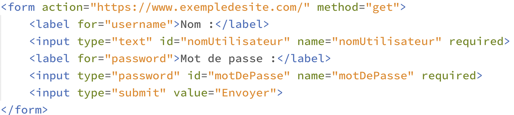
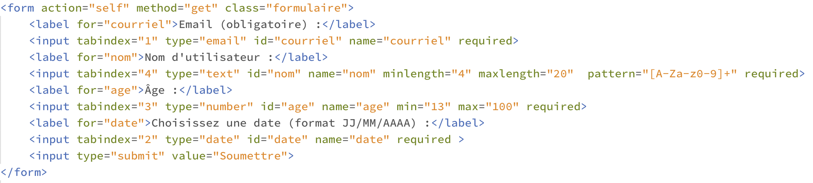

EXEMPLE D'ÉVALUATION
1. LIRE DU CODE HTML
Exercice 1
Quelques questions sur l'extrait 1 de code html reproduit ci-dessous.
- Que va produire cet extrait lors de son exécution sur un navigateur ?
- Expliquer le sens de la balise <form> et de l'attribut action présents en première ligne de cet extrait
- Expliquer ce que signifie l'attribut method à l'intérieur de la balise <form>, quel autre valeur aurait-il pu prendre ?
- Quelle est l'utilité de l'attribut name à l'intérieur de la balise <input> ?
- Quelle est l'utilité de l'attribut type à l'intérieur de la balise <input> ?
- Que vont produire successivement ces trois balises <input> lors de l'ouverture du formulaires dans le navigateur ?
Extrait 1 :
Exercice 2
Quelques questions sur l'extrait 2 de code html reproduit ci-dessous.
- Quelle est l'utilité de la balise <label> présente dans cet extrait.
- Quelle est l'utilité des attributs for et id présent dans la balise <label>.
- Quelle est l'utilité de l'attribut required présent dans la balise <input>.
- Quelle est la différence pour l'utilisateur lorsqu'il ouvre l'extrait 1 puis l'extrait 2 dans son navigateur ?
Extrait 2 :
Exercice 3
Quelques questions sur l'extrait 3 de code html reproduit ci-dessous.
- Expliquer ce que signifie la valeur "self" de l'attribut action dans la balise <form>.
- Quel peut être l'intérêt d'ajouter ainsi l'attribut class dans la balise <form> ?
- Expliquer la signification de l'attribut tabindex et que vont produire la série des valeurs qui lui sont atttribuées ici ?
- Expliquer la signification de l'attribut pattern et de la valeur qui lui est affectée ici.
- Que se passe-t-il si l'utilisateur saisit le nom "Mia" dans le champ de saisie dédié ?
Extrait 3 :

2. PASSER DU FORMULAIRE AU CODE HTML
Exercice 1
Écrire un extrait de formulaire html (balise <form> et tout ce qui est dedans) afin qu'après avoir ouvert puis rempli ce formulaire sur le navigateur, ce dernier affiche l'URL ci-dessous. On s'efforcera de proposer un formulaire "convivial" où les champs sont bien identifiables par l'utilisateur.

Exercice 2
Écrire un extrait de formulaire (balise <form> et tout ce qui est dedans) ) afin que ce formulaire demande :
- un nom composé de trois à douze lettres majuscules, à renseigner obligatoirement
- un mot de passe à huit chiffres, à renseigner obligatoirement
- un pays à sélectionner dans une liste déroulante de quatre pays
On fera en sorte que le mot de passe soit transmis au serveur de manière la plus sécurisée possible.
Exercice 3
Écrire un extrait de formulaire html (balise <form> et tout ce qui est dedans) qui puisse être interprêté dans le serveur par le code PHP présenté ci-dessous. On s'efforcera de proposer un formulaire "convivial" où les champs sont bien identifiables par l'utilisateur.